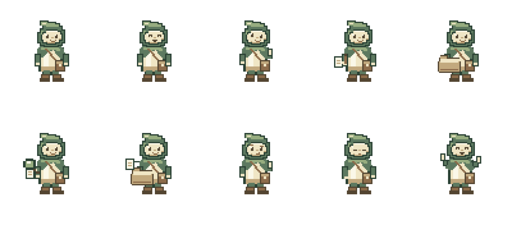

The folded sage hood, one cream stitch, linen tunic, and square satchel stay the same across every asset. These are original pixel-authored PNGs with genuine transparency, a fixed eight-color palette, and no antialiasing.
The 16, 24, and 32 px icons use dedicated portrait grids. Larger exports preserve their hard pixel edges. Use these instead of shrinking the full body.
Top row: idle, happy, curious, working, carrying a folder. Bottom row: scanning, organizing, confused, sleepy, celebrating. Each standalone expression is also available below.
